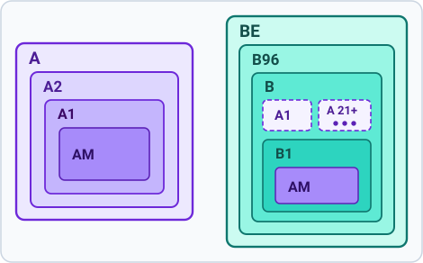
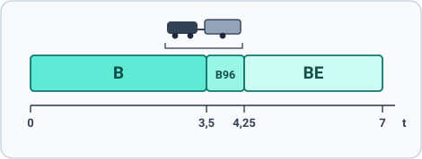
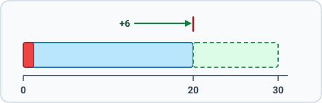

What this topic covers
This topic covers the paperwork and rules around the driving license. It includes the categories, meaning what each lets you drive and the minimum age, the vehicle documents and plates, and the penalty system of points, suspension, revocation, and license validity. It is heavy on numbers, so learn the key thresholds.
For US drivers. The points system runs opposite to most American schemes: you start with 20 points and violations subtract. More points is good, and reaching zero triggers a license re-examination. Renewal is not a formality either: every renewal requires a medical fitness check.
License categories: minimum age and what each permits
A driving license is issued in categories, and each one names the vehicles it allows and the minimum age for holding it. For mopeds and motorcycles a category also fixes how large or how powerful the engine may be. Four points are worth settling before the categories themselves, because each one shortens what follows.
How engine limits are written. Engine size is given in cm³ ("cc"), the engine's displacement, and power is given in kW. The two are related, since displacement measures the engine's size and size roughly determines the power it can make, but the law uses each measure where it works best. Displacement is part of the engine's design, fixed and unalterable, so no owner can change it. Power is what actually determines performance and it can be tuned up or restricted down, so wherever the law uses power it must also guard against tampering. Electric motors have no displacement at all, which is why their limits are always in kW.
- A license category also permits whatever a narrower category permits. This is the principio di contenimento, and the point of it is that an entitlement is never earned twice. Every license category permits what AM permits, AM being the narrowest of them all.
- Containment runs one way only. The time you have held a category extends nothing, and no category turns into a wider one by waiting.

AM appears twice because every license category permits what AM permits. The dashed boxes are the two reaches that hold in Italy only, where B also permits A1's motorcycles and, from age 21, the three-wheelers of A.
- Six categories are reached by direct access, meaning without holding any license first: AM at 14, A1 and B1 at 16, A2 and B at 18, and A at 24 years old. Each category is applied for on its own.
- So A1 does not require AM, and A2 does not require A1 either: no category is a prerequisite for the next.
- Experience opens a second route, called graduated access: a rider who has held A2 for at least two years can take A at 20 instead of waiting for 24, and a rider who has held A1 for two years can take A2 at 18 by the same route. There is no route to A at 18 or at 21 years of age, and holding AM adds nothing to it.
- Everything above B is a "superior" license, taken only once you already hold the category it builds on.
The letter E added to a category means a trailer. E is never a license by itself. It attaches to a base category as BE, C1E, CE, D1E or DE, it is always a separate practical test on a combination of that size, and it belongs to the base license you passed that test on. Each category below describes what its own E adds.
Masses on these licenses appear in both units. A metric ton (t) is 1,000 kilograms, so 3.5 t is 3,500 kg.
A and B compared
The A categories are for mopeds and motorcycles, B is for cars, and most of the difficulty lies in the few places where the two meet.
- B does not reach motorcycles. No age and no number of years turns a car license into a motorcycle license, so B never covers A2 or A.
- The exception is national and narrow. Within Italy only, B also allows the vehicles of A1, and from age 21 it allows motor tricycles over 15 kW.
- A does not reach cars, nor non-light quadricycles at any age, which belong to B1 and B.
- Both families allow what AM allows, by containment.
- On agricultural machines the two differ by degree: the A categories allow only those within the size and mass limits set for motorcycle-class vehicles (motoveicoli), while B allows them all, including the ones classed as exceptional.
The A categories: AM, A1, A2 and A
Motorcycle risk climbs steeply with power, and a rider cannot practice for it in advance, so the law stages access instead of granting it at once. Each step pairs a minimum age with a power limit, and nothing advances on its own.
- AM, from 14 years old. This is the entry license and it exists for mopeds. It covers two- and three-wheeled mopeds (ciclomotori) up to 50 cm³, or up to 4 kW where the motor is electric, limited to 45 km/h, together with light quadricycles (quadricicli leggeri, the minicar), which are the one four-wheeled vehicle in this family.
- AM takes both a theory exam and a practical exam, and reaching adulthood waives neither.
- An AM holder may ride at 14 in Italy only, because the other EU countries set their own minimum ages.
- No passenger may be carried on AM until the rider is 16 years old.
- AM reaches no motorcycle of any kind, electric ones included, and no non-light quadricycle, whatever its power.
- A1, from 16 years old. This is the first motorcycle license, set at a power a new rider can manage. It covers motorcycles, with or without a sidecar, that stay within three limits at once: displacement up to 125 cm³, power up to 11 kW, and a power-to-weight ratio up to 0.1 kW/kg, so a 125 that exceeds either of the other two falls outside it.
- A1 also covers motor tricycles up to 15 kW, which is one reason no motor tricycle is ever a vehicle you may drive without a license. It does not cover a tricycle above 15 kW at any age.
- A1 covers agricultural machines within the size and mass limits set for motorcycle-class vehicles (motoveicoli), but not operating machines (macchine operatrici).
- On A1 a passenger may be carried whenever the registration document provides the seat, and no rule requires that passenger to be an adult.
- A2, from 18 years old. This is the middle step and it is defined entirely by power. It covers motorcycles up to 35 kW with a power-to-weight ratio no greater than 0.2 kW/kg, and it sets no displacement limit at all, so any statement pairing A2 with a figure in cm³ is false.
- One more condition, the no-detuning rule, stops a large motorcycle from being restricted down into A2: such a bike qualifies only if the model it derives from makes no more than double the limit, which is 70 kW. The multiplier is two, and a statement that says three is false.
- By containment A2 also covers A1 and AM, so motor tricycles up to 15 kW and the same agricultural machines come with it.
- On A2 a passenger may be carried whenever the registration document provides the seat.
- A, from 24 years old, or from 20 with two years of A2 behind you. This is the full motorcycle entitlement. It covers all motorcycles (motocicli), with or without a sidecar, at any displacement and any speed, from the first day and with no power ceiling, and it is valid across the EU rather than in Italy alone.
- A also covers motor tricycles over 15 kW, but only once the rider is 21, whatever category is held.
- A does not cover non-light quadricycles.
Which limit belongs to which category is worth fixing in mind, because the law chose each one deliberately. The displacement limit is A1's, and a limit fixed by the engine's design needs nothing to defend it. The power limits are A2's, and because power can be altered they need the no-detuning rule standing beside them.
The B categories: B1, B, B96 and BE
- B1, from 16 years old. It exists for the heavier quadricycle and covers only that, namely non-light quadricycles (quadricicli non leggeri) with an engine up to 15 kW, the handlebar-steered quad included. A non-light quadricycle is never driven without a license, and never at 14.
- B1 covers nothing on two wheels, so it does not reach A1's 125s, and it covers no motor tricycle at any age.
- B1 covers no car at all, not even a one-seater or a three-seater driven with nobody aboard.
- A B1 holder who later wants B must pass the B driving test on a car; there is no theory-only supplement that turns B1 into B.
- B, from 18 years old. This is the car license and the broadest category below the professional ones. It covers motor vehicles (autoveicoli, meaning cars, trucks and motorhomes) with a maximum authorized mass up to 3.5 t built to carry no more than eight people besides the driver, which is nine seats in all.
- B also covers every type of motor quadricycle, agricultural machines including those classed as exceptional, and operating machines that are not exceptional.
- B does not cover a bus, nor a goods vehicle or a motorhome over 3.5 t.
- B and a trailer. Towing behind a car is decided by the mass of the whole combination, not by the trailer alone. B by itself covers a light trailer up to 750 kg, and a heavier trailer as well provided the combination stays within 3.5 t.
- B96 is category B with harmonized code 96 added, not a separate license. It covers a car towing a trailer over 750 kg where the combination is above 3.5 t but no more than 4,250 kg.
- B96 is earned by a driving test on such a combination, and no theory exam is needed. Unlike BE, it may be taken at the same time as B or at any point afterwards. It presupposes no other category.
- Code 96 is valid throughout the EU and not in Italy alone. It adds a trailer and nothing else: no motorcycle and no articulated vehicle.
- BE, the trailer E on category B. It covers a vehicle of up to 3.5 t towing a trailer of up to 3,500 kg, so the combination may reach 7 t, well above the 4,250 kg of B96. The towing vehicle itself never exceeds 3.5 t on BE, and the trailer never exceeds 3,500 kg.
- BE is earned by a driving test on such a combination, and no theory exam is needed for someone who already holds B.
- BE cannot be earned together with B, so you must already hold B and then pass the separate BE test. Its minimum age is that of B, 18.
- By containment BE covers what AM, B1, B and B96 cover, but not A, and it does not cover a minibus towing a trailer, which is D1E or DE ground. A minibus here is a small bus, with more than nine seats including the driver. A van with up to nine seats is an autovettura, and BE does cover it.
- BE's validity runs on the same schedule as B.
The three limits can also be written as equations. Each mass is the maximum authorized mass on the vehicle's registration document, and the car is the towing vehicle. For all three licenses the car itself must stay within this limit:
car ≤ 3,500 kg
Category B covers the trailer when either of these two holds:
trailer ≤ 750 kg
car + trailer ≤ 3,500 kg
B with code 96 covers the next band of the combination:
3,500 kg < car + trailer ≤ 4,250 kg
Category BE checks the trailer alone:
trailer ≤ 3,500 kg
Check them in that order: B, then B96, then BE. The first license whose line holds is the one you need, and a car within its limit towing a trailer of 750 kg or less never needs more than B.

A trailer of 750 kg or less is a separate case, since B covers it whatever the combination comes to.
- The special license (patente speciale, BS at category B) is not another category. It is one of the ordinary categories, B included, issued to a driver with a physical disability, and it is valid only for a vehicle with the characteristics written on the license itself, which normally means an adaptation.
C and D: the professional categories
- C1 and C cover goods vehicles (autocarri) over 3.5 t, and D1 and D cover buses (autobus). Each is taken only after holding B, each has its own theory and practical exams, and each takes the matching E for a heavy trailer.
- BE does not add up to CE, since a trailer over 3.5 t behind a truck needs CE, which can only be taken once you already hold C. Holding BE and then earning C therefore does not hand you CE, because the categories add up in what they let you drive, never in what they let you skip.
- C presupposes and contains B, so a C holder may drive any car, an eight-seater or a nine-seater included, without committing any violation.
New drivers: the powerful-vehicle limit
- For the first 3 years after earning a category B license, you may not drive cars with too high a power-to-weight ratio. The specific power is capped at 75 kW per tonne.
- For M1 passenger cars, including electric and plug-in hybrids, there is also an absolute ceiling of 105 kW.
- The cap does not apply to a vehicle carrying an authorized disabled person while that person is aboard, or while a qualified instructor sits beside you during practice.
- No road is closed to a new driver: the autostrada and the main extra-urban road are open from the first day, at the lower speed caps of the first three years.
Vehicle documents and plates
- To drive a vehicle on the road you must hold the license category that covers that vehicle.
- The vehicle must be registered (immatricolato). The one ordinary exception is a test plate (targa prova), under which an unregistered vehicle may lawfully circulate.
- The vehicle must carry its registration document (carta di circolazione), and the driver need not be the person it is registered to.
- The ownership certificate, the receipt for the ownership tax and any warranty paper are not documents you must carry, and none of them bars the vehicle from the road.
- The vehicle must be covered by liability insurance and carry the compulsory equipment, the warning triangle and the hi-vis vest.
- The plates exist so that the keeper can be traced from the vehicle. They must be fixed firmly and in the correct position, kept legible and clean, and never tampered with, forged or bent to fit a mount.
- A car used for driving practice must show 'P' (learner) panels, retroreflective, front and rear.
- You must show your documents to officers, who are recognizable by uniform, baton, and badge, on request, and cooperate with them.
- Of the insurance policies, only third-party liability (R.C.A.) is compulsory in order to drive. Collision cover for your own vehicle (kasko) and cover against theft, fire, vandalism or natural events are optional extras.
The points system
- A license starts with 20 points.
- Certain violations deduct points: not every offense, and not only the ones that carry suspension or withdrawal.
- In the first 3 years of a category B license, the point penalties are doubled. The doubling follows the driver's seniority, never the vehicle's power.
- If several point-losing violations happen at once, at most 15 points are deducted, and that cap falls away entirely where the offense carries suspension or revocation.
- Go 2 years with no point-losing violation while below 20, and you regain the full 20 points. Two clean years never jump a driver below 20 straight to 30; they bring him back to 20.
- A recovery course restores 6 points for A/B licenses (9 for the higher categories), but never above 20.
- The only way past 20 is good conduct: a driver already at 20 who goes two years without a point-losing violation earns 2 bonus points, and repeated clean biennia can take the total up to a maximum of 30.
- Some offenses cost money but no points: parking in front of a driveway, not having the registration document with you, driving a vehicle whose periodic inspection is overdue. The ownership certificate need not be carried at all, so leaving it at home costs neither points nor money.
- Reach zero points and you must take a revision (re-test). Losing the points does not by itself revoke the license.

Point-losing offenses include the following.
- Points are lost for speeding by more than 10 km/h (6 mph).
- Points are lost for breaches of the passing rules.
- Points are lost for phone use without hands-free or an earpiece.
- Points are lost for riding with no helmet, or with the helmet unfastened.
- Points are lost for an unsafe following distance that leads to a crash.
- Points are lost for misuse of the lights, or for not using them.
- Points are lost for overloading, in weight or in number of people.
- Points are lost for driving without the corrective lenses the license requires.
- Points are lost for using the emergency lane outside the permitted cases.
- Points are lost for driving under drugs or alcohol.
Fines, cameras and the owner
- A fine is owed by the driver who committed the violation, and the owner of the vehicle owes it jointly, unless the owner proves the vehicle was used against their will.
- Points are always taken from the driver's license, never from the owner's license as such.
- A speed camera or a red-light camera records the plate and not the driver, so the ticket is sent to the owner.
- The owner must then give the police the name and license details of whoever was driving, within 60 days of receiving the ticket, and the points come off that person's license.
- An owner who does not name the driver, without a documented reason, pays a separate fine of €291 to €1,166, but loses no points.
- Paying the minimum amount within 60 days settles a fine, and paying within 5 days takes 30% off, except for violations that also carry a license suspension.
Withdrawal, suspension, revision, and revocation
- Withdrawal (ritiro) is the officer taking the license on the spot. It happens with an expired license.
- Withdrawal happens for drink-driving: the driver's own state, not a passenger's.
- Withdrawal happens after a crash with injuries.
- Withdrawal happens when a badly arranged load is not fixed after a police request.
- Withdrawal happens when a required revision was not taken in time.
- Withdrawal happens with any violation that carries suspension, which is a narrower set than the violations that cost points.
- Withdrawal is not for mere paperwork lapses, such as not carrying the registration document or the ownership certificate.
- Withdrawal is precautionary and not a verdict: the officer takes the document at the scene, and the Prefect suspends it afterwards only where there are well-founded elements of evident responsibility, so a driver who turns out not to be at fault gets it back.
- Suspension (sospensione) is an accessory penalty that follows the breach of particular articles of the Code.
- Suspension follows, for example, drugs or alcohol, refusing the breath test, exceeding limits by over 40 km/h (25 mph), fleeing without aiding the injured, new-driver violations, misusing the emergency lane, driving a seized vehicle, and forging insurance documents.
- Since the 2024 reform, using a handheld phone while driving also brings a short license suspension of 15 days to 2 months even on a first offense.
- Revision (re-test) (revisione della patente) can be ordered by the Motorizzazione or the Prefect when fitness is in doubt, such as after a serious crash with injuries, after drink or drug driving, or at zero points.
- Revision is also ordered for a repeat offender: after a violation costing at least 5 points, two more such violations within 12 months, three in all, not two.
- A revision can require a medical exam and/or a driving test.
- Failing a revision means revocation. There is no special permit to keep driving after a fail.
- Revocation (revoca) ends the license. It applies to driving while suspended, wrong-way driving on an autostrada, permanent loss of the physical or mental requirements, loss of the moral requirements, failing a revision, or swapping the license for one issued by a foreign state.
- A temporary loss of the requirements does not revoke.
- Revocation is ordered by the licensing authority or Prefect, not by police officers.
- The moral requirements (requisiti morali) concern a person's criminal record, not the way they drive. Under the Highway Code a habitual offender, a person placed under court-ordered preventive or security measures, or a person convicted of drug trafficking cannot hold a license. If such a condition arises after the license is issued, the Prefect revokes the license, and it never leads to a suspension or a revision.
License validity by age
A category B license is normally valid for set periods.
- It is valid for 10 years under 50, and the same holds for A and BE. It is never open-ended, and it is never five years at that age.
- It is valid for 5 years from 50 to 70.
- It is valid for 3 years from 70 to 80.
- It is valid for 2 years over 80.
- A special license at category B runs 5 years up to age 70.
- Those periods are counted from the issue or renewal, except that a license may instead be aligned to the holder's birthday, which is the wording every validity statement carries.
A license is renewed only after a medical fitness check.
- The check is made by an authorized doctor, and the confirmation comes from the Ministry, not from a Prefect's "moral" check. There is no periodic driving test.
- One visit covers A and B together.
- Renewal continues past 80, for 2 years at a time.
- An expired license means no driving at all, with no grace days.
Summary of key points
- AM is at 14 for mopeds and light quads, A1 at 16, A2 at 18, and full A at 24 by direct access or 20 after 2 years of A2. B and BE are at 18, B for vehicles up to 3.5 t and a maximum of nine seats.
- For trailers, B allows a light trailer or a combination up to 3.5 t, B96 allows a combination up to 4,250 kg, and BE allows a trailer up to 3,500 kg.
- Drive only with registration, insurance, and legible plates, plus the triangle and vest. Use 'P' panels for learners, and show documents to officers.
- Points start at 20, double in the first 3 years, and at most 15 are lost at once. 2 clean years restore 20, and zero points means a revision. For the first 3 years, a new B driver may not drive cars over 75 kW/t, and M1 cars must also be 105 kW or less.
- Withdrawal, suspension, revision, and revocation apply to escalating offenses. Wrong-way driving and driving while suspended bring revocation.
- Validity is 10, 5, 3, or 2 years for ages under 50, 50 to 70, 70 to 80, and over 80, renewed after a medical check.